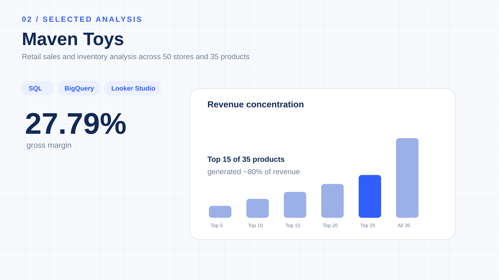

Maven Toys
Retail Sales & Inventory
An end-to-end retail analytics case study connecting sales, profitability, product performance, geography, inventory risk and seasonality using BigQuery, GoogleSQL and Looker Studio.

Which products, stores and inventory signals deserve attention?
The analysis connects sales performance with product economics, store geography, pricing, inventory coverage and time-based performance.
829K+ transactions across 50 stores and 35 products.
Revenue leadership and margin leadership are not the same.
Toys is the largest revenue category at $5.09M and 35.26% of revenue, while Electronics has the strongest gross margin at 44.57%.


15 of 35 products account for ~80% of revenue.
The Pareto analysis identifies a concentrated revenue portfolio. The 80% threshold is crossed at Rank 15 – Gamer Headphones.
This provides a practical lens for availability, replenishment, pricing and promotional attention.


Current stock is evaluated against historical sales velocity.
The project defines inventory indicators for no historical sales, high risk, potential reorder and normal stock. The purpose is to flag potential current risk—not to reconstruct historical stockouts or exact reorder dates.
Performance varies by location and time.
The top five cities—Ciudad de Mexico, Guadalajara, Monterrey, Hermosillo and Guanajuato—contribute approximately 41.58% of company revenue.

From raw transactions to management insight.
Tools
Google BigQuery · GoogleSQL · Looker Studio · GitHub
SQL techniques
CTEs · Aggregations · Window functions · Ranking · Running totals · Percentage contribution · Pareto analysis
Limitations
Inventory is a current snapshot; missing records are not automatically zero stock; price-volume relationships are associations, not causal effects; 2023 data ends in September.